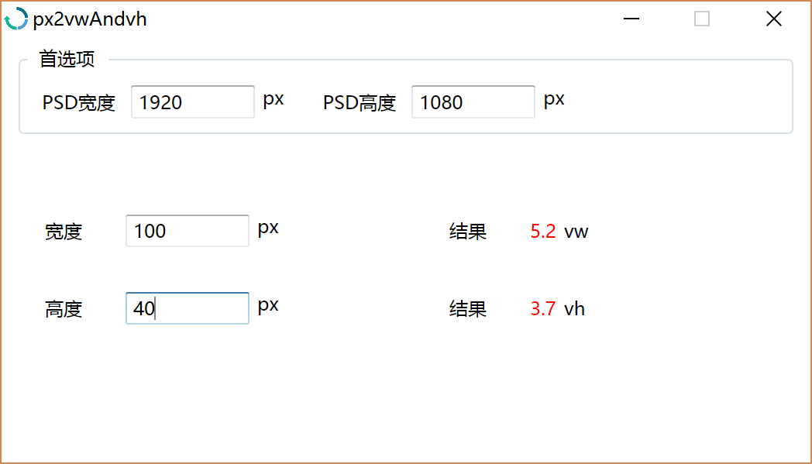

移动端自适应页面¶
CSS3中有两个新尺寸单位vw和vh， 这两个单位非常适合于开发移动端自适应页面。
假如说有一个设计师做了一张1136x750px的页面，这长页面是针对iPhone6的屏幕设计的。 前端开发工程师将这张设计稿转换成网页， 网页中所有的元素尺寸都用px硬编码， 那么这张网页在iPhone6中能跑的好好的，但是到了其他手机中会容易出问题， 毕竟很多手机的屏幕尺寸和iPhone6是不一样的。
vw和vh就是用来解决这个问题的。它们是一组相对尺寸单位，和百分比相似， 1vw和1vh其实和1%是一样的。换句话说， 不管是1136x750px的屏幕还是960*640px或着其他的尺寸的屏幕，它们的宽度都是100vw，高度都是100vh。1136x750的屏幕里， 1vw = 11.36px，1vh =7.5px；960*640px的屏幕里， 1vw = 9.6px，1vh = 6.4px。 这跟百分比是一样的。
但是， vw和vh和百分比最大的差别在于，百分百是相对于父元素的， vw和vh则是相对与根元素的，更确切一点是
window.innerWidth 和 window.innerHeight
这给html设置自适应尺寸提供了很大的便利，要为html文档树某处枝叶的一个元素设置相对于屏幕的百分比，在以前， 只能用JavaScript动态计算，现在使用vw和vh两个单位就可以解决问题。
但是这个重px到vw和vh的换算过程挺麻烦的。假定有一张psd设计稿， 宽度为1920px， 高度为1080px， 设计稿中有一个按钮， 宽为100px， 高位40px， 如何把这个按钮的宽高从px转换为vw和vh。
我们可以使用以下公式
宽度(vw) = 100 / 1920 * 100;
高度(vh) = 100 / 1080 * 40;
但是每次都机械样式手动算，太浪费事件了， 于是我制作了一个简单的换算工具。

这是工具的界面
首选项里面填好psd设计搞的尺寸， 然后要计算psd中的页面元素的vw和vh的值， 只需要在工具宽高输入框中填入相应的px值， vw和vh值就自动能计算出来了， 减少了无谓手动计算的工作量。
工具下载地址： https://pan.baidu.com/s/1dF1ZPCH
源码github地址： https://github.com/aspwebchh/px2vwAndvh
注意：此工具必须在windows7版本以上系统使用。
知乎：https://www.zhihu.com/people/aspwebchh
github：https://github.com/aspwebchh